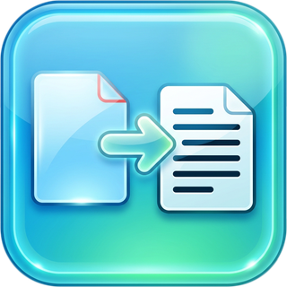
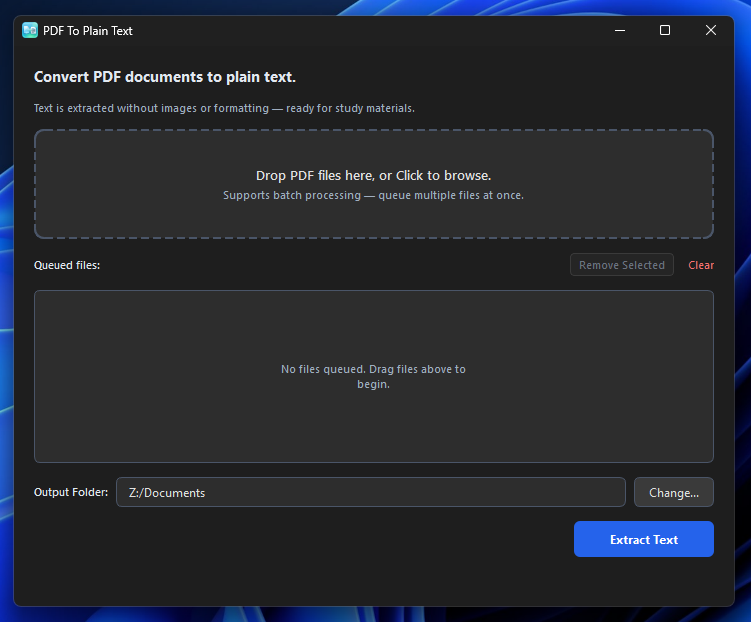

Windows
Installer (.exe)
Download for Windows
Turn PDF documents into plain text files.
Drop in one PDF or many, pick where the text files go, and press Extract Text. Your files stay on your computer — nothing is uploaded anywhere.
Version
Free download. The buttons below always get the newest release.
Installer (.exe)
Download for WindowsDisk image (.dmg)
Download for MacInstaller (.deb)
Download for Linux
.txt file with the same name.